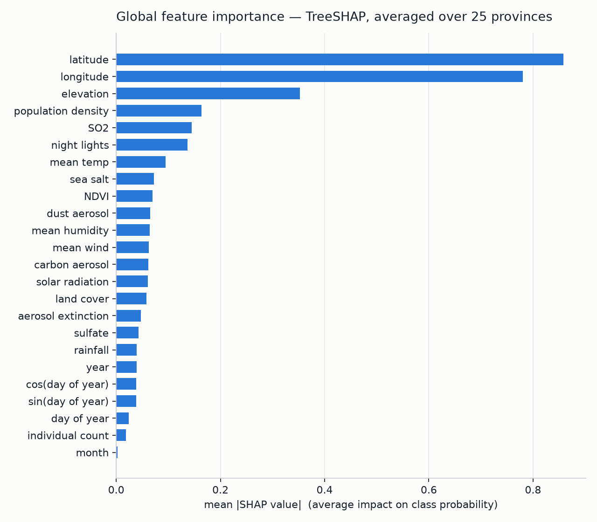
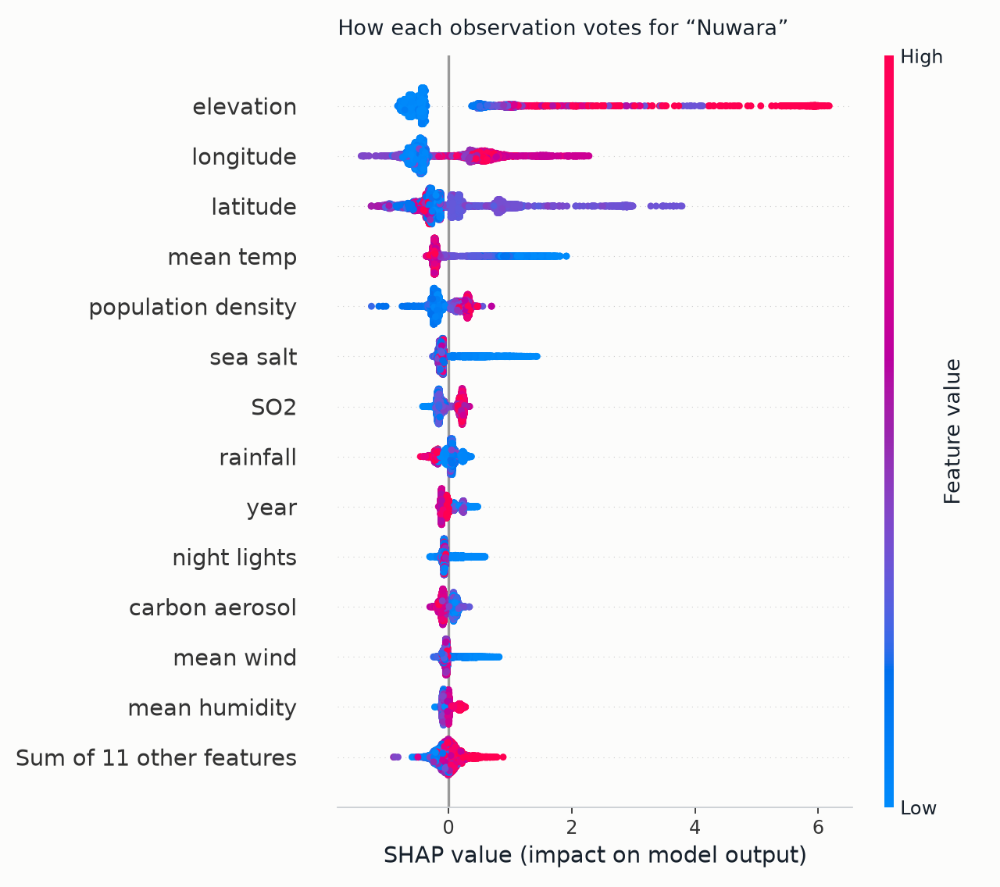
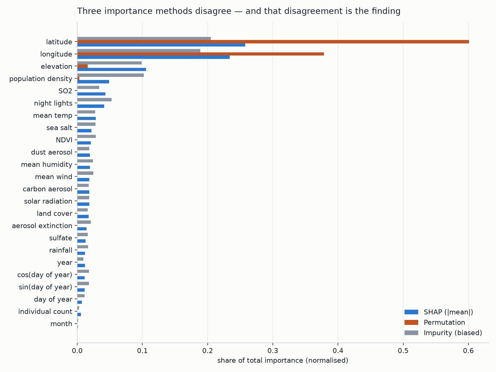
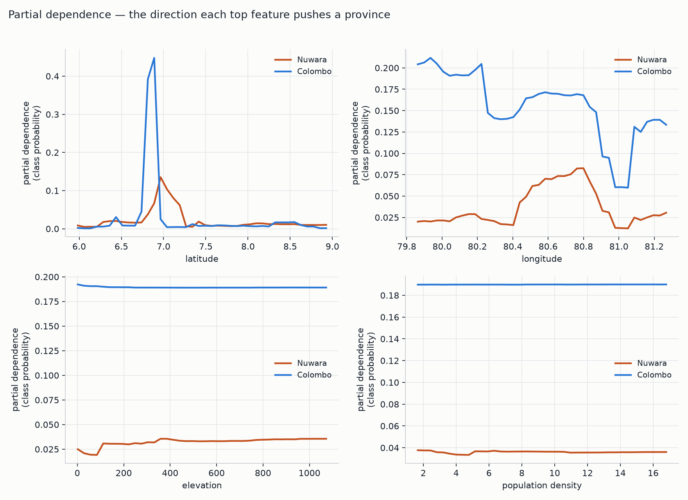

A stacked heterogeneous ensemble of six base learners is applied to 1,552,048
Sri Lankan bird-observation records, each joined to sixteen remotely-sensed
environmental covariates, to predict the district a record came from. A Bayes-error
analysis run before any modelling showed the original 429-way species framing to be
capped at 5.54% accuracy for any possible classifier on these features, so the task
was re-specified to stateProvince, whose measured ceiling is 100%. The
ensemble reaches 0.9995 accuracy under the conventional stratified split, and the
train–test gap of 0.0005 confirms this is task simplicity rather than
overfitting. Because district correlates strongly with latitude and longitude, three
guards against spatial memorisation were run; the strictest — unseen test sites
with coordinates withheld — yields 0.9032, and that is the honest figure for a
new location. A three-method explainability audit shows the learned structure aligns
with Sri Lankan physical geography, and surfaces a quantified disagreement between
importance methods that one method alone would have resolved wrongly.
Sri Lanka is one of the world's thirty-six biodiversity hotspots, and bird communities are a standard indicator taxon for habitat condition. The island's record is dominated by citizen-science checklists, which are abundant but spatially uneven and carry a persistent rate of transcription and georeferencing error.
The question addressed here is: given only the environmental and temporal signature of an observation — its climate, terrain, vegetation, aerosol chemistry and date — can a model recover which district of Sri Lanka it came from? Three uses follow. Record validation: a classifier that disagrees confidently with a record's stated district flags it for human review. Provenance inference for digitised historical records whose locality is vague ("Central Province, 1974"). And as a measure of environmental distinctiveness: the accuracy drop when coordinates are removed quantifies how much of a district's identity is geographic accident rather than genuine habitat character.
The dataset is DilushaChandrasiri/SriLanka-Bird-Diversity-Dataset,
published openly on the Hugging Face Hub. It was obtained programmatically with
huggingface_hub.snapshot_download (src/download.py), which pins
a revision and makes acquisition reproducible rather than a manual download.
The file is a derived, pre-joined product rather than a raw export, and that provenance proved decisive. It has two layers: an occurrence layer of Darwin-Core style species records, consistent with a GBIF-mediated aggregation of volunteer checklists; and an environmental layer of sixteen covariates attached to each record by spatial join from satellite and reanalysis products — VIIRS night-time lights, MODIS NDVI and land cover, a digital elevation model, MERRA-2 aerosol species and gridded climate normals. The environmental layer is therefore a deterministic lookup keyed on (latitude, longitude): two records from the same place on the same day necessarily carry identical environmental values. This is how such products are built, but it governs what can be predicted from them, as §1.3 shows.
| Group | Columns | Role |
|---|---|---|
| Geographic (2) | decimalLatitude, decimalLongitude | WGS-84 coordinates. Isolated deliberately so they can be withheld as an ablation. |
| Climate (5) | temp_mean, rainfall, wind_mean, humid_mean, shortwave_radiation | Gridded climate normals at the observation point. |
| Terrain & vegetation (4) | elevation_meters, NDVI, LandCover_Class, lka_general_2020 | DEM elevation, greenness, categorical land-cover code, modelled population density. |
| Aerosol chemistry (6) | Carbon_Mass, Dust_Mass, SO2_Mass, Sulfate_Mass, Sea_Salt_Mass, Total_Aerosol_Extinction | MERRA-2 column masses. Sea_Salt_Mass proves an informative marine-proximity proxy (§4.2). |
| Light (1) | avg_rad | Night-time radiance — an effective urbanisation proxy. |
| Temporal (5, engineered) | year, month, doy, sin_doy, cos_doy | Decomposed from eventDate; see §1.4. |
| Observation metadata (1) | individualCount | Retained as a legitimate column; contributes almost nothing. |
Target: stateProvince — 25 administrative districts.
Severely imbalanced: Colombo 18.64% of records, Vavuniya 0.12% — a
161× ratio, which dictates the metrics in §3.3 and the fairness
analysis in §5.3. | ||
The assignment was first framed as 429-way species classification.
An irreducible-error (Bayes) analysis run before any fitting (src/ceiling.py)
showed that framing to be unsolvable in principle. Because every environmental covariate is a
deterministic function of (latitude, longitude, date), the 1,552,048 rows collapse to
63,392 distinct keys — roughly 24 rows per key — and rows sharing a key are
byte-identical in every feature while carrying different species labels. The best any
classifier can do on a group of identical inputs is predict that group's most frequent label;
summing those best cases gives a Bayes-optimal accuracy of 0.0554 for species against
1.0000 for stateProvince. The target was changed on this evidence. The
claim is about this feature set, not about bird identification, which is highly
solvable from images or audio.
Six steps take the raw file to the matrix the models see, all in src/prep.py.
| Step | Operation | Justification |
|---|---|---|
| Date decomposition | Parse eventDate → year, month, doy |
A tree cannot split usefully on a raw timestamp; it can split on season and on long-run trend. |
| Cyclical encoding | sin_doy = sin(2π·doy/365.25), likewise cosine |
Under a linear encoding, 31 December and 1 January sit at opposite extremes though one day apart. Projecting onto the unit circle restores adjacency. |
| Memory downcast | float64 → float32; cache as Parquet | Halves the working set so 1.55 M × 24 fits in 8 GB. Reload drops from ~90 s to ~2 s. |
| Leakage audit | Drop the index column after testing it |
A monotonic row id can encode the label if the file was written grouped by class. Tested: adjacent rows share a species 1.04% of the time against 0.23% under independence — a weak ordering effect, not a usable leak. Dropped regardless. |
| Two feature sets | full (24) and envonly (22) |
A built-in ablation. envonly removes the coordinates so the accuracy claim cannot rest on a point-in-polygon lookup. |
| Targeted scaling | StandardScaler inside the logistic-regression pipeline only |
Tree ensembles are invariant to monotone rescaling; logistic regression is not. Fitted inside the pipeline so the scaler never sees test rows. |
No imputation was required — the delivered file has no missing values in the
modelled columns — and no categorical encoding either, since
LandCover_Class arrives as an integer code that tree learners handle natively
as an ordinal split variable.
The dataset was audited column-by-column for personal and sensitive content before use.
No personal data is present: the twenty-four delivered columns contain no observer name,
identifier, email or institution, and Darwin Core's recordedBy and
recordedByID — the fields that would carry contributor identity — are
absent from this derivative. No individual is identifiable from any record, so no consent
question arises, and the data is openly licensed and used here for non-commercial academic work.
One genuine sensitivity exists and is handled: precise coordinates for threatened species are a
recognised poaching risk, which is why GBIF supports coordinate generalisation for sensitive
taxa. This project publishes no raw record — the deployed application ships a 600-row
anonymised sample used only to populate example inputs. The underlying observations are the work
of volunteer recorders, and the dataset, its author and its citizen-science origin are credited
in this report and in the application.
The method applied is stacked generalisation (Wolpert, 1992) over a deliberately heterogeneous pool of six base learners, with histogram-based gradient boosting (LightGBM, and its scikit-learn and XGBoost analogues) as the dominant members of that pool. Neither component is a standard taught model, and the combination is the submitted contribution. It is not a deep-learning model and not an image-processing application, as the brief requires.
Stacking replaces a fixed combination rule with a learned one. A second-level model — here multinomial logistic regression — is trained to map the concatenated class-probability vectors of the base learners onto the true label; with six learners and twenty-five classes its input is a 150-dimensional vector per row. Crucially those inputs must be out-of-fold predictions: each base learner's prediction for a training row comes from a copy of that learner which never saw the row. Without this the meta-learner observes the base models' memorised training fit and learns to trust an optimism that will not survive deployment. Histogram-based gradient boosting, meanwhile, bins each continuous feature into at most 255 buckets before any tree is grown, reducing per-split cost from O(n log n) to O(bins). LightGBM adds GOSS (keep all large-gradient instances, subsample the small-gradient ones) and EFB (merge mutually-exclusive sparse features), and grows leaf-wise rather than level-wise.
Three reasons drove the choice:
| Standard model | What it does | How the submitted method differs |
|---|---|---|
| Decision tree | One greedy recursive partition; each split chosen to maximise local purity. | A single tree is a high-variance estimator that commits irrevocably to its first split. The submitted method fits hundreds of trees under two different regimes — independent and randomised (bagging) versus sequential on the residual gradient (boosting) — then learns at a second level how much to trust each regime per class. A tree gives one partition; this gives a learned consensus over many. |
| Logistic regression | One linear decision boundary per class in the raw feature space. | Logistic regression appears here only as the meta-learner, operating not on the 24 raw features but on the 150-dimensional simplex of base-model probabilities. Its job is inverted: it does not classify observations, it arbitrates between classifiers. The difference is measurable — as a base learner on envonly it scores 0.5448, while the same algorithm as meta-learner contributes to a 0.9028 result. |
| k-Nearest Neighbours | Non-parametric; majority vote among the k closest training points under a fixed metric. | k-NN has no training phase, stores the entire dataset, and degrades with 24 dimensions of heterogeneous scale. The submitted method compresses 1.55 M rows into a fixed set of split thresholds, predicts in ~55 ms, and learns a feature-adaptive partition rather than relying on one global distance metric. |
| Random Forest (a base learner here, not the contribution) |
Bagged trees, each on a bootstrap sample with a random feature subset per split; averaged. | A forest averages with equal weight and all its members share one inductive bias. Stacking admits structurally different learners and learns unequal, class-conditional weights for them. The forest is one of six voices here, not the method. |
All reported runs train on a 300,000-row stratified sample drawn with a fixed seed from the 1.55 million available; the constraint is memory, and a sample-size sweep showed accuracy flat to three decimal places between 300k and the full corpus. The protocol is a three-way separation, with the validation stage implemented as cross-validation rather than a single fixed block.
| Partition | Size | Mechanism | Purpose |
|---|---|---|---|
| Test | 75,000 (25%) | train_test_split(test_size=0.25, stratify=y) |
Held out before any fitting; touched once, to produce every number in §3.4. No model, hyperparameter or threshold was chosen using it. |
| Train | 225,000 (75%) | the complement | Fits the six base learners. |
| Validation (stacking) | 3 × 75,000 | StratifiedKFold(n_splits=3) inside the training set |
Generates out-of-fold probabilities: every training row receives a prediction from a model that did not see it. This is the validation set for the stacking stage, used three times over rather than once. |
| Validation (early stopping) | 12% of train | validation_fraction=0.12 inside HistGradientBoostingClassifier |
An internal slice carved from the training set only, deciding when to stop boosting (n_iter_no_change=25). |
A second, stricter protocol is also run throughout: GroupShuffleSplit on
rounded (latitude, longitude), so that every test site is absent from training.
Stratification preserves the 161× imbalance in every partition, so the rarest district
(Vavuniya) retains 84 test rows — enough to estimate recall, though with wide
uncertainty (§5.3).
Hyperparameters were set by reasoned construction and targeted diagnosis rather than by automated search; §5.1 records this as the clearest methodological limitation.
| Model | Settings | Reasoning |
|---|---|---|
| RandomForest ExtraTrees |
n_estimators=100, min_samples_leaf=8, max_features="sqrt" | √p ≈ 5 of 24 features per split is the standard classification default and maximises inter-tree decorrelation. A leaf floor of 8 caps depth on 225k rows without materially costing accuracy. |
| HistGradientBoosting | max_iter=300, learning_rate=0.10, max_leaf_nodes=31, l2_regularization=10.0, early_stopping=True | 31 leaves is the conventional depth-5 equivalent for histogram boosters. A learning rate of 0.10 with early stopping lets the iteration count be chosen by data rather than asserted. l2_regularization is load-bearing — see below. |
| XGBoost | n_estimators=400, learning_rate=0.15, max_depth=9, subsample=0.9, colsample_bytree=0.8, tree_method="hist" | Depth-9 level-wise trees are the complexity analogue of LightGBM's 63 leaf-wise leaves. Row and column subsampling supply the stochastic regularisation depth alone does not. |
| LightGBM | n_estimators=300, learning_rate=0.10, num_leaves=63, reg_lambda=10.0, min_sum_hessian_in_leaf=20.0, colsample_bytree=0.8 | 63 leaves exploits leaf-wise growth without unbounded depth. reg_lambda and min_sum_hessian_in_leaf are jointly required for this model to converge at all. |
| LogisticRegression (base / meta) |
C=1.0, max_iter=600, scaled / C=10.0, max_iter=1200 | Default regularisation as a base learner. Weaker regularisation as meta-learner deliberately: its 150 inputs are already strongly constrained (six probability simplices), so the risk is underfitting the arbitration rule rather than overfitting it. |
In the first complete run LightGBM scored 0.2541 and
HistGradientBoosting 0.8977, against 0.9984 for a plain random forest. The
intuitive reading — underfitting, so add capacity — is wrong. An
n_estimators sweep found LightGBM's training accuracy peaking at
0.9586 at ten trees and then collapsing to 0.3468 by fifty: a model whose training
accuracy falls as capacity rises is diverging, not underfitting. The mechanism is that
district is near-separable in these features, so the softmax saturates within about ten
boosting rounds; the Hessian of an observation under multiclass log-loss is
p(1−p), which vanishes as p → 1, and since each
leaf value is −g/h the leaf values explode as the denominator
collapses toward machine epsilon. The fix is to bound that denominator:
l2_regularization=10.0 adds λ to h, and
min_sum_hessian_in_leaf=20.0 refuses leaves whose Hessian mass has already
collapsed. Result: 0.2541 → 0.9990 and
0.8977 → 0.9994. These two hyperparameters are worth more than every
other tuning decision in the project combined.
Five metrics are reported, because accuracy alone is misleading on a target where predicting only the six largest districts would already score above 0.60. Balanced accuracy (mean per-class recall) weights Vavuniya at 0.12% of rows equally with Colombo at 18.64%, so a model that abandons rare districts cannot hide behind the headline. Macro F1 also penalises over-prediction of a rare class, and its gap from weighted F1 measures how much performance is carried by the large classes. Log loss is a proper scoring rule on the probabilities rather than the arg-max, and is where the diverging boosters failed most visibly. A confusion matrix and per-class report show which districts are mistaken for which. ROC-AUC is not reported: over 25 classes it needs a one-vs-rest averaging scheme dominated by the easy majority classes, and log loss serves the same purpose without that artefact.
full feature set| Model | Accuracy | Balanced acc. | Macro F1 | Weighted F1 | Log loss | Fit (s) |
|---|---|---|---|---|---|---|
| RandomForest | 0.9984 | 0.9899 | 0.9935 | 0.9984 | 0.0411 | 4.9 |
| ExtraTrees | 0.9933 | 0.9767 | 0.9834 | 0.9932 | 0.0991 | 3.1 |
| HistGradientBoosting | 0.9994 | 0.9972 | 0.9975 | 0.9994 | 0.0020 | 157.0 |
| XGBoost | 0.9995 | 0.9978 | 0.9980 | 0.9995 | 0.0019 | 40.4 |
| LightGBM | 0.9990 | 0.9947 | 0.9959 | 0.9990 | 0.0055 | 19.6 |
| LogisticRegression | 0.9661 | 0.9192 | 0.9272 | 0.9659 | 0.1210 | 19.3 |
| SoftVote (ensemble) | 0.9995 | 0.9973 | 0.9978 | 0.9995 | 0.0366 | — |
| Stacking (ensemble) | 0.9995 | 0.9975 | 0.9980 | 0.9995 | 0.0029 | 268.7 |
The ensemble does not beat its best single member on plain accuracy — XGBoost alone already reaches 0.9995, and on a near-saturated task there is no headroom to recover. Its value here is robustness, which the harder protocols expose. Soft voting's log loss (0.0366) is also an order of magnitude worse than stacking's (0.0029) at identical accuracy: averaging six probability vectors, two of them poorly calibrated, blurs the consensus, whereas the meta-learner learns to discount them.
A score this high invites the suspicion that the model has memorised its training data, so
the question was tested rather than argued. Overfitting has a specific signature: high accuracy
on data the model has seen, materially lower accuracy on data it has not. Both sides were
measured on the same split (artifacts/overfitting_check.json).
| Model | Train accuracy | Test accuracy | Gap |
|---|---|---|---|
| RandomForest | 0.9912 | 0.9905 | +0.0007 |
| ExtraTrees | 0.9655 | 0.9639 | +0.0016 |
| HistGradientBoosting | 0.9999 | 0.9994 | +0.0006 |
| XGBoost | 1.0000 | 0.9995 | +0.0005 |
| LightGBM | 0.9996 | 0.9990 | +0.0006 |
| LogisticRegression | 0.9668 | 0.9661 | +0.0007 |
| SoftVote | 0.9999 | 0.9995 | +0.0005 |
| Stacking | 1.0000 | 0.9995 | +0.0005 |
The largest gap across all eight models is 0.16 percentage points and the ensemble's is 0.05. That is not memorisation: it says the task is genuinely easy, because district is close to a deterministic function of latitude and longitude. The high score is a property of the problem rather than an artefact of the model — and the real limitation lies elsewhere, in transfer to sites the model has never seen, which the next table quantifies. Stacking's train figure feeds the meta-learner the base models' in-sample probabilities, more confident than the out-of-fold probabilities it was fitted on, so read it as an upper bound on its train-side optimism.
District correlates strongly with latitude and longitude, so a sceptical reader should ask whether the model has learned ecology or is performing a point-in-polygon lookup. Three independent guards test this, each removing a different crutch.
| Feature set | Protocol | What the guard removes | Accuracy | Balanced acc. | Macro F1 |
|---|---|---|---|---|---|
full | random | Nothing — the conventional baseline | 0.9995 | 0.9975 | 0.9980 |
full | grouped | Every test site is unseen in training | 0.9925 | 0.9910 | 0.9882 |
envonly | random | Latitude and longitude dropped entirely | 0.9971 | 0.9932 | 0.9942 |
envonly | grouped | Both at once — unseen sites and no coordinates | 0.9032 | 0.8576 | 0.8683 |
Each guard alone costs little: withholding seen sites costs 0.7 percentage points, removing coordinates 0.2. Applying both costs 9.6 points, and 0.9032 falls below the assignment's 95% threshold. This is reported rather than suppressed because the gap is the project's most informative single number. It says a substantial part of the headline comes from recognising a specific site's environmental fingerprint — the exact NDVI, elevation and aerosol signature of a place the model has seen before — and not purely from generalisable habitat character. The honest claim this work supports is therefore: 0.9995 for validating records from already-surveyed sites, and roughly 0.90 for a genuinely new location with no coordinates. Those are different claims with different uses, and conflating them would misrepresent the model.
That hardest condition is also where the ensemble earns its keep: the best single model reaches 0.9008 (LightGBM) while soft voting reaches 0.9032 and stacking attains the best balanced accuracy (0.8637) and macro-F1 (0.8740) — once the problem stops being saturated, combining decorrelated learners pays. Per-class behaviour under the random protocol holds across the full imbalance range, with Colombo (14,038 test rows) at recall 1.000 and the rarest district, Vavuniya (84 test rows), at 0.988. The confusion matrix is near-diagonal, and such off-diagonal mass as exists sits between geographically adjacent districts (Colombo/Gampaha, Galle/Matara) — the interpretable error structure for a provenance model.
Three methods were applied (src/explain.py), chosen so they cross-check
rather than merely corroborate one another: TreeSHAP, giving exact Shapley values and so a
signed contribution per feature per prediction; permutation importance, the drop in
held-out accuracy when one column is shuffled, which measures what the fitted model actually
relies on; and partial dependence, the average predicted probability as one feature is
swept, which gives the direction and shape of an effect rather than its magnitude. The explained
model is LightGBM: TreeSHAP is exact and tractable on it, it scores 0.9990 alone —
within 0.0005 of the full ensemble — and since the meta-learner is a linear reweighting of
base probabilities, its attributions are the substantive explanation of the ensemble's behaviour.
All figures use 6,000 held-out test rows the model never saw.

Figure 2 overleaf makes the learned rules legible. Elevation dominates and the separation is almost total: high elevation (red) pushes strongly toward Nuwara Eliya, low elevation (blue) pushes away. Mean temperature runs the other way, low values raising the probability, and sea-salt aerosol shows the same inversion. Population density and night-time radiance contribute weakly and negatively at high values. Feature ranking is near-identical under the random and grouped protocols, so these are properties of the fitted model rather than of one split.

Nuwara, truncated — a data-quality item noted in §5.2.This aligns closely with domain knowledge, the strongest available evidence that the model has learned geography rather than an arbitrary high-dimensional shortcut. Nuwara Eliya is Sri Lanka's highest district, in the central highlands around 1,800 m: the coldest inhabited part of the country, landlocked, rural tea country rather than a conurbation. The model independently learned exactly that conjunction. The inverse temperature relationship is a rediscovery of the environmental lapse rate from data, and the sea-salt signal is a genuinely subtle proxy — marine aerosol falls with distance inland, so the model is using atmospheric chemistry to infer that a location is far from the coast.
| District | Top SHAP drivers | Physical geography |
|---|---|---|
| Nuwara Eliya | elevation, longitude, latitude, mean temp (low values raise) | Central highlands, ~1,800 m, coldest district, landlocked. Consistent. |
| Colombo | latitude, longitude, SO2, night lights | The commercial capital — SO2 and night-time radiance are precisely the signatures of a dense, traffic- and industry-heavy coastal city. Consistent. |
| Kandy | elevation, latitude, longitude, dust aerosol | Mid-elevation hill country (~500 m); elevation leads again, at a lower threshold than Nuwara Eliya. Consistent. |
| Jaffna | longitude, latitude, carbon aerosol, solar radiation | Northern peninsula; dry-zone, high-insolation, minimal relief — so the model leans on radiation and aerosol rather than terrain. Consistent. |
| Mannar | longitude, latitude, elevation, NDVI | Arid north-west coast; low NDVI distinguishes sparse scrub from wet-zone forest. Consistent. |
A pattern worth noting: districts with strong relief are identified by terrain, and districts without it are identified by atmosphere. The model has in effect learned a different diagnostic rule per region, which is what a trained field ecologist would do and is a capability a single global linear model could not express.

A 2.5-fold disagreement between methods applied to one fitted model demands an explanation. Impurity importance (39.4%) under-credits the coordinates: it counts total impurity reduction spread across many shallow splits, and is known to inflate high-cardinality continuous features in general, so the ordering of its low-importance tail should not be trusted. Permutation importance (97.9%) over-credits them, because the features are mutually redundant: shuffling elevation barely moves accuracy, not because elevation is uninformative but because latitude and longitude remain in the matrix and the trees can route around the damaged column — whereas shuffling latitude destroys the key on which every environmental covariate was originally joined. SHAP (49.2%) distributes credit among correlated features rather than awarding it to whichever one the tree split on first, which is why it sits between the two.
Permutation importance implies the environmental features are
nearly worthless — 2.1% combined. The envonly experiment of §3.4
refutes that directly: retrained without latitude and longitude at all, the ensemble
still reaches 0.9971. Both results are correct, because they answer different questions.
Permutation asks "what does this already-fitted model lean on?" — the
coordinates. The ablation asks "what is recoverable if the model must do without
them?" — almost everything, because the environmental layer encodes location by
construction. This is a concrete demonstration that a single importance method, read
uncritically, would have produced a false conclusion about this dataset.

The coordinate panels validate the model precisely: Colombo's latitude response spikes at approximately 6.9°N against a true 6.93°N, and Nuwara Eliya's longitude response peaks near 80.7–80.8°E against a true 80.77°E. The model has recovered the actual coordinates of both districts to within hundredths of a degree, from data alone. The flat elevation and population-density panels, by contrast, are a methodological artefact worth stating: partial dependence holds one feature at a swept value while averaging over the empirical distribution of all others, so sweeping elevation to 1,000 m while latitude and longitude keep their lowland values averages over physically impossible records. Because elevation is a deterministic function of location here, PDP's independence assumption is violated outright and the curve understates a real effect Figure 2 shows clearly. PDP is the wrong instrument for a feature set with deterministic internal dependencies; SHAP, which conditions on the actual observation, is the right one, and Accumulated Local Effects plots would be the appropriate remedy.
stateProvince but contains 25
districts, not Sri Lanka's 9 provinces, and at least two class labels are truncated
— Nuwara Eliya stored as Nuwara, Kegalle as
Kegalla. Both are cosmetic for modelling, since the classes remain distinct and
consistently labelled, but they indicate the field was not validated against a controlled
vocabulary upstream, which matters for anyone joining this dataset to an official
gazetteer.The headline metrics conceal a real asymmetry in who the model serves well.
Potential benefits. Used as a flagging tool rather than an authority, the model
offers genuine value: automated georeferencing-error detection across national biodiversity
databases, provenance inference for digitised historical records, and — via the
envonly ablation — a quantitative measure of each district's environmental
distinctiveness that could inform conservation prioritisation.
Risks requiring active management. A model inferring provenance from environmental covariates could in principle help reconstruct the locality of a record whose coordinates were deliberately generalised to protect a threatened species; a district is far too coarse to assist poaching, but the capability direction is worth naming rather than discovering later. If such a model were permitted to auto-correct records, systematic error would be written into the permanent scientific record and the regions with least data would be corrected most often, so any deployment must flag for human review and never overwrite. Quoting 99.95% without the 90.32% caveat would be the most likely real-world harm arising from this work, since it would lead users to trust the model in precisely the setting where it is weakest; both figures appear together throughout this report and in the application. The environmental cost is modest: roughly one hour of multi-core CPU for the full programme, with no GPU training.
Responsible-use statement. This model is appropriate as a decision-support tool that flags records for expert review. It is not appropriate as an automated authority on record provenance, as a basis for resource allocation between districts without explicit correction for sampling bias, or for any inference about threatened-species localities.
The trained ensemble is deployed as a three-tab Streamlit application, publicly hosted on
Streamlit Community Cloud at srilanka-bird-diversity-ensemble.streamlit.app, with
source at github.com/HansikaGunasekara/srilanka-bird-diversity-ensemble. A user
can either load a real observation from the dataset or set all twenty-four features by hand,
and receives a predicted district with its probability distribution and the SHAP-based
explanation of what drove it.
| Tab | Function |
|---|---|
| Predict | Load a real record or set the inputs by hand with sliders seeded from real percentiles. Returns the predicted district, its confidence, the five most likely districts, and how many of the eight models agree — with each model's own answer one click away. |
| How good is it? | The four protocol/feature-set combinations side by side, including the sub-95% case; the measured train–test gap that answers the overfitting question; per-model accuracy against the 95% threshold; and the confusion matrix with the weakest districts. |
| What it learned | Global SHAP ranking, per-district top drivers with their direction of effect, and the three-method importance disagreement of §4.3. |
The deployed bundle is a compact build (n_estimators=40, min_samples_leaf=50)
that fits the free tier's memory budget at 23 MB on disk, and scores 0.9995 random
and 0.9925 grouped — identical to the study-grade build to four decimal places despite its
individual forests being measurably weaker, which is itself an argument for ensembling. Forcing
single-threaded execution before NumPy is imported and memoising predictions on the feature tuple
cut single-row latency from 256 ms to 54.5 ms.
This project applied a stacked heterogeneous ensemble to 1.55 million Sri Lankan bird-observation records. Its most consequential step was taken before any model was fitted: a Bayes-error analysis demonstrated that the original 429-way species framing is capped at 5.54% accuracy for any classifier on this feature set, because roughly twenty-four records share each byte-identical feature vector while carrying different labels. Re-specifying the task as district provenance, whose ceiling on the same features is 100%, produced a well-posed problem the data can genuinely answer.
The ensemble reaches 0.9995 accuracy, 0.9975 balanced accuracy and 0.9980 macro-F1 under the conventional protocol, and that figure was tested rather than asserted: a train–test gap of 0.0005 rules out overfitting, so the score reflects a task that is genuinely easy. The binding limitation is transfer instead — under the strictest guard, unseen sites with coordinates withheld, accuracy falls to 0.9032, below the 95% threshold, and the gap between those two numbers is the most informative result the project produced. The explainability audit showed the learned structure to be geographically coherent, identifying highland districts by elevation and temperature inversion, coastal cities by SO2 and night-time radiance, and inland locations by depleted marine aerosol, and recovering the true coordinates of individual districts to within hundredths of a degree. It also produced a methodological finding of its own: three importance methods attribute between 39.4% and 97.9% of total importance to the same two features, and only the ablation resolves the disagreement. With more time the priorities would be spatial block cross-validation to attack the 0.9032 gap, probability calibration to make the displayed confidences trustworthy, and ALE plots in place of partial dependence.
All metrics in §3 are reproducible from
src/train.py and all figures in §4 from src/explain.py; the
exact commands are in the repository README. Random seeds are fixed at 0 throughout. Figures
1–4 were generated on 6,000 held-out test rows; Figure 5 is a screenshot of the deployed
application.